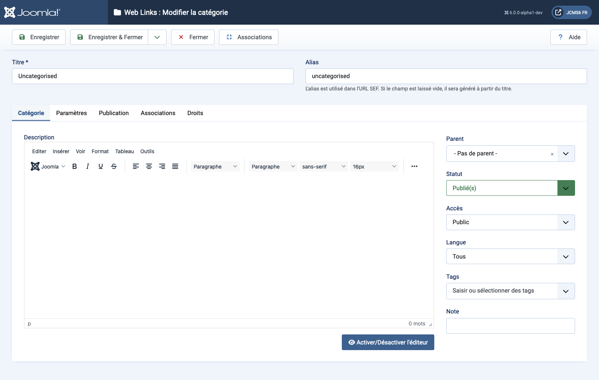

Joomla Help Screens
Liens Web : Modifier la Catégorie
Description
La page Liens Web : Modifier une catégorie est utilisée pour créer une nouvelle catégorie ou modifier une catégorie existante. Notez que vous devez créer au moins une catégorie de lien Web avant de pouvoir créer un lien Web. De plus, les catégories de liens Web sont distinctes des autres types de catégories, telles que celles pour les articles, les bannières et les flux de nouvelles.
Éléments communs
Certains éléments de cette page sont traités dans des articles d'aide séparés :
- Barres d'outils.
- L'onglet Options.
- L'onglet Publication.
- L'onglet Associations.
- L'onglet Permissions.
Comment accéder
- Sélectionnez Composant → Liens Web → Catégories dans le menu de l'administrateur. Ensuite...
- Sélectionnez le bouton Nouveau dans la barre d'outils pour ajouter une nouvelle catégorie. Ou...
- Sélectionnez un Titre dans la colonne des titres pour modifier une catégorie existante.
Capture d'écran

Champs du formulaire
- Titre Le titre de cet élément. Celui-ci peut ou non s'afficher sur la page, en fonction des valeurs des paramètres que vous choisissez.
- Alias Le nom interne de l'élément. Normalement, vous pouvez laisser ce champ vide et Joomla remplira une valeur par défaut composée du titre en minuscules avec des tirets à la place des espaces.
Onglet Catégorie
Panneau de gauche
- Description La description de l'élément. Les descriptions de Catégorie, Sous-catégorie et Lien Web peuvent être affichées sur les pages web en fonction des paramètres choisis.
Traduit par openai.com